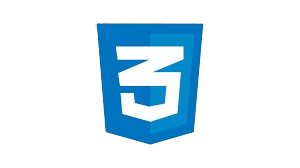
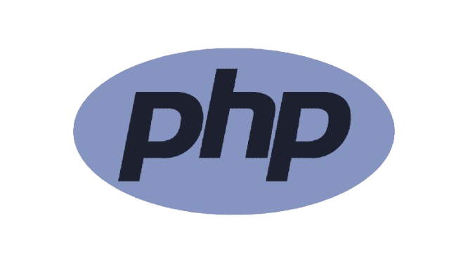
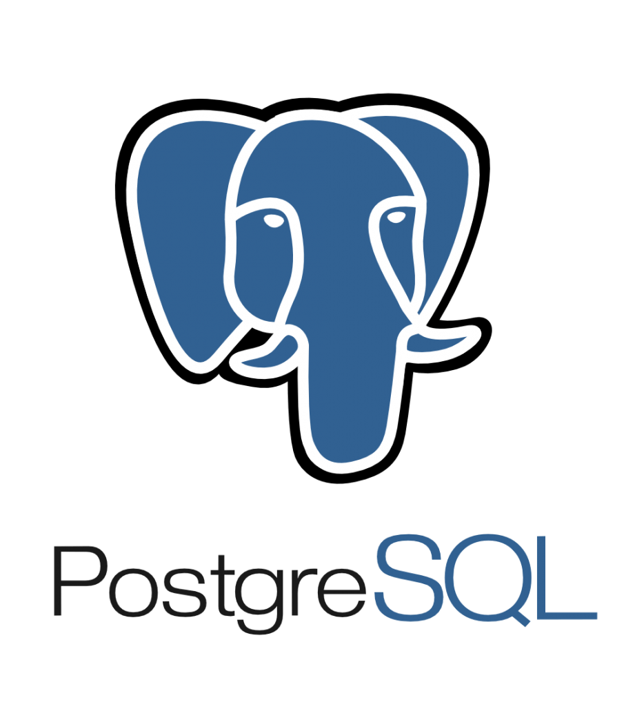
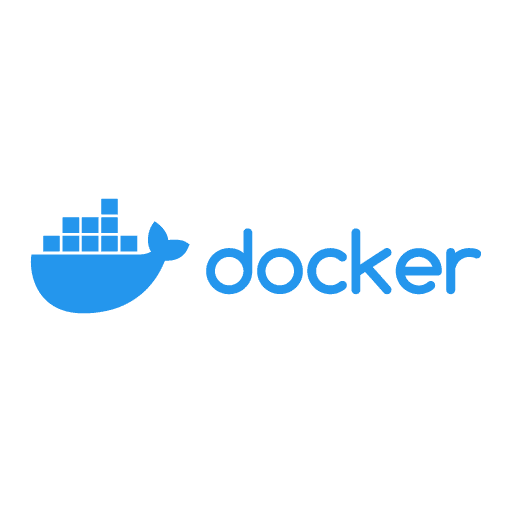

Atualmente, estou cursando o bacharelado em Ciência da Computação. Durante este período, tenho adquirido continuamente novos conhecimentos relacionados à programação e outras áreas da tecnologia. Sou um profissional competente, comunicativo e com bom relacionamento pessoal. Tenho experiência em UI Design, criando interfaces intuitivas, e recentemente migrei para backend, focando na integração de bancos de dados e APIs. Além disso, adquiri conhecimentos em engenharia de dados utilizando ferramentas como AWS, EC2, Snowflake, dbt e Apache Airflow, e em DevOps, incluindo CI/CD, Automação de Infraestrutura, Monitoramento, Containers com Docker e Kubernetes, Gerenciamento de Configuração e Práticas Ágeis...
Eduardo Gonçalves
DESENVOLVEDOR BACKEND
Ferramentas

HTML

CSS

JAVASCRIPT

PHP

PYTHON

NODE.JS

REACT.jS

POSTGRESQL

DOCKER